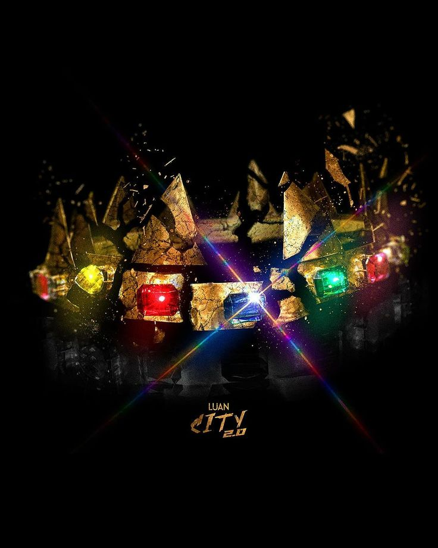
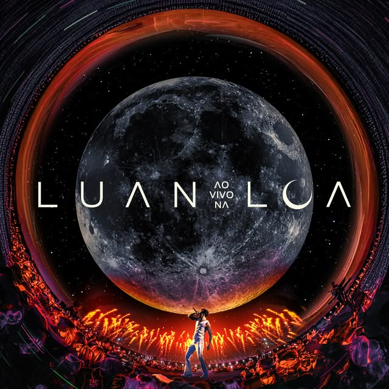

Músicas mais ouvidas dos álbuns preferidos dessa autora
Confira alguns dos principais álbuns e músicas de Luan Santana.
ÁLBUM
LUAN CITY
Luan Santana

ÁLBUM AO VIVO
LUAN CITY 2.0
Luan Santana
ÁLBUM
1977
Luan Santana

ÁLBUM AO VIVO
LUAN AO VIVO NA LUA
Luan Santana
ÁLBUM AO VIVO
REGISTRO HISTÓRICO
Luan Santana